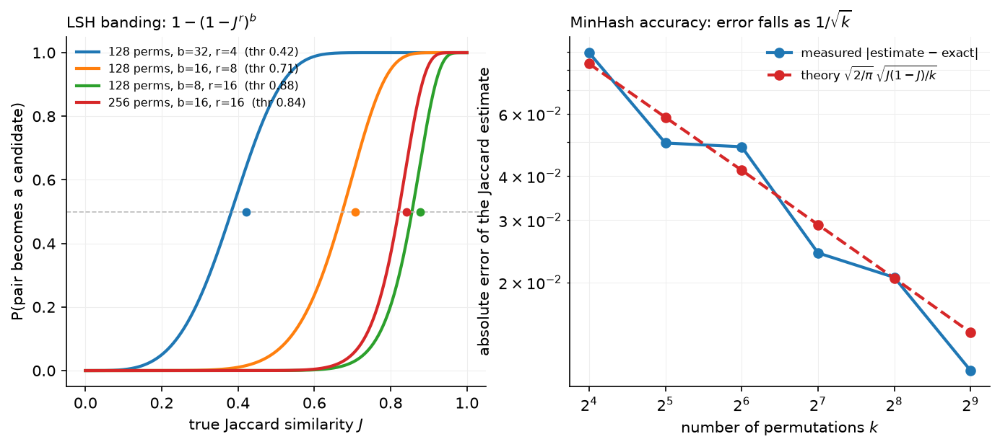

Pretraining data & objective¶
Why this matters at staff level. The objective is one line, and interviewers use it to check whether you understand teacher forcing, per-token averaging and what a "loss of 2.0" means. The data pipeline is where the real decisions live: at 15 trillion tokens, deduplication, decontamination, quality filtering and mixture weights move benchmark scores more than most architecture changes. Strong signal is being able to derive the loss, implement MinHash dedup and sequence packing on a whiteboard, and argue for a data mixture with a validation protocol rather than taste.
TL;DR: the interview card¶
- Objective: \(\mathcal{L}(\theta) = -\frac{1}{N}\sum_{b,t}\log p_\theta(x_{b,t+1}\mid x_{b,\le t})\), mean over target tokens; one causal forward pass scores all \(T-1\) targets at once (teacher forcing).
- Shift is the whole trick:
logits[:, :-1]predictstokens[:, 1:]. Padding targets getignore_indexand are excluded from the denominator. - Report bits-per-byte \(= \frac{\sum_t \text{NLL}_t}{\ln 2 \cdot \#\text{bytes}}\) to compare models with different tokenisers; per-token loss depends on the vocabulary.
- Data funnel: CommonCrawl (≈100 snapshots) → language ID → URL/boilerplate filters → quality filters → dedup → decontamination → mixture. FineWeb keeps ≈15T tokens from 96 snapshots; Llama 3 pretrains on ≈15T, DeepSeek-V3 on 14.8T.
- MinHash: \(P[\min h(A) = \min h(B)] = J(A,B)\); 128 permutations give a Jaccard estimate with std \(\approx\sqrt{J(1-J)/128}\); LSH with \(b\) bands of \(r\) rows catches pairs above threshold \(\approx (1/b)^{1/r}\) without pairwise comparison.
- Decontamination: flag any eval example sharing a word 13-gram (GPT-3) or token 8-gram (Llama 3) with the training set; report both clean and contaminated scores.
- Quality: heuristics (Gopher rules), perplexity vs a reference model (CCNet/Wikipedia KenLM), classifiers (FineWeb-Edu: a small model distilled from LLM judgements of "educational value").
- Mixture: fixed domain weights by ablation at small scale (Llama 3: ~50% general, 25% math & reasoning, 17% code, 8% multilingual) or learned (DoReMi's group-DRO weights).
- Packing: concatenate documents with EOS to fill fixed rows; mask attention across document boundaries (Llama 3) and restart positions per document.
1. Intuition first¶
Take the four-token sequence "the cat sat down" with token ids \([12, 7, 31, 5]\). A causal language model is a function that maps a prefix to a distribution over the next token. That sequence supplies three training predictions at once, all from the same forward pass:
| position \(t\) | prefix seen | target \(x_{t+1}\) | contributes |
|---|---|---|---|
| 0 | the |
cat |
\(-\log p(\texttt{cat}\mid\texttt{the})\) |
| 1 | the cat |
sat |
\(-\log p(\texttt{sat}\mid\texttt{the cat})\) |
| 2 | the cat sat |
down |
\(-\log p(\texttt{down}\mid\texttt{the cat sat})\) |
Position 3 has no target and is dropped. The causal mask guarantees that the hidden state
at position \(t\) depends only on tokens \(\le t\), so the model at position 1 has not "seen"
sat when it predicts it. Feeding the true prefix at every position, instead of the
model's own sampled prefix, is teacher forcing. It is what makes the whole sequence
trainable in one forward pass: \(T\) positions, \(T-1\) losses, one matrix multiply per layer.
The number the model reports, say 2.0 nats per token, is the average of those per-position surprises. Two sequences of the same text tokenised with different vocabularies give different per-token losses because they contain different numbers of tokens; dividing the total NLL by the number of UTF-8 bytes instead gives a tokeniser-independent number.
The data side has the same flavour of "simple objective, hard bookkeeping". A web crawl is mostly boilerplate, duplicated pages, spam, and text in the wrong language. The pipeline that turns 100 snapshots of CommonCrawl into a training set is a funnel:
flowchart LR
A[CommonCrawl WARC] --> B[text extraction<br/>trafilatura] --> C[language ID<br/>fastText] --> D[URL & boilerplate filters]
D --> E[quality heuristics<br/>Gopher / C4 rules] --> F[dedup<br/>exact + MinHash] --> G[quality classifier<br/>FineWeb-Edu style]
G --> H[decontaminate vs evals] --> I[tokenise & count] --> J[mixture weights] --> K[pack into rows of T]Every stage is a decision with a measurable effect: the FineWeb team ablated each one by training small models on the output and comparing benchmark curves. That protocol, ablate the pipeline with small models on a fixed benchmark suite, is the answer to most "how would you decide" questions in this chapter.
2. The math¶
2.1 The objective and what it estimates¶
For a corpus of sequences \(x = (x_1,\dots,x_T)\), the chain rule of probability gives \(p_\theta(x) = \prod_{t=1}^{T} p_\theta(x_t \mid x_{<t})\). Maximum likelihood on the corpus is
where \(N_{\text{targets}}\) counts the non-padding target positions. In expectation over the data distribution \(q\), this is \(\E_{q}[-\log p_\theta] = H(q) + \KL(q\,\|\,p_\theta)\) (per token). The entropy \(H(q)\) of natural text is the irreducible part; the scaling-law constant \(E\) of the next chapter is an estimate of it. Every point of loss you remove above \(E\) is KL to the data distribution.
Per-token averaging. Averaging over targets (not over sequences) makes the loss independent of how you cut the corpus into rows, and makes gradient magnitudes independent of \(T\). With padding, the denominator must be the number of valid targets or padded rows would be down-weighted.
Bits per byte. With \(n_{\text{bytes}}\) UTF-8 bytes in the evaluated text,
A tokeniser that produces fewer tokens per byte gets a higher per-token perplexity for the same model quality; BPB removes that artefact. It is what The Pile and most open evaluations of pretraining loss report.
2.2 Teacher forcing as a masking statement¶
Let \(S = QK^\top/\sqrt{d_k}\) be the score matrix of one attention head, \(S \in \R^{T\times T}\).
With the causal mask \(M_{ij} = 0\) if \(j\le i\) and \(-\infty\) otherwise,
\(\softmax(S + M)_{ij} = 0\) for all \(j > i\), so row \(i\) of the output is a function of
\(x_{\le i}\) only. By induction over layers, the logit vector at position \(t\),
\(z_t \in \R^{V}\), is a function of \(x_{\le t}\). Hence \(\softmax(z_t)\) is a valid model of
\(p(\cdot \mid x_{\le t})\) and can be scored against \(x_{t+1}\) for every \(t\) in the same pass.
Without the mask the position-\(t\) logits could copy \(x_{t+1}\) from the input and the loss
would collapse to zero while learning nothing (the classic "leak" bug when someone writes a
decoder without is_causal=True).
The gradient at the logits is the familiar \(\nabla_{z_t}\ell_t = \softmax(z_t) - e_{x_{t+1}}\) (derived in logistic & softmax regression), and \(T-1\) such vectors flow back through the same weights in one backward pass.
2.3 MinHash: why the minimum estimates Jaccard¶
Represent a document by the set \(A\) of its word \(n\)-grams ("shingles"). For a random permutation \(\pi\) of the shingle universe, define \(h_\pi(A) = \min_{a\in A}\pi(a)\). The minimum over \(A\cup B\) is attained by exactly one element; it belongs to \(A\cap B\) with probability \(|A\cap B|/|A\cup B|\), and \(h_\pi(A) = h_\pi(B)\) if and only if that happens:
With \(k\) independent permutations the fraction of agreeing slots is an unbiased estimate of \(J\) with variance \(J(1-J)/k\). In practice \(\pi\) is a universal hash \(h_i(x) = (a_i x + b_i \bmod p) \bmod 2^{32}\); 128 or 256 of them.
Locality-sensitive hashing. Cut the signature into \(b\) bands of \(r\) rows. Two documents collide in a band with probability \(J^r\); in at least one band with probability \(1-(1-J^r)^b\). This S-curve crosses \(1/2\) near \(J \approx (1/b)^{1/r}\), so with \(k=128\), \(b=16\), \(r=8\) the threshold is \(\approx 0.71\). Everything below is almost never a candidate, everything above almost always is, and the number of comparisons is the number of band collisions, not \(\binom{n}{2}\).

Left: the candidate probability for four banding choices, with the 0.5 crossing marked.
Fewer bands of more rows shifts the threshold up and sharpens the curve, so you tune
\((b, r)\) to the similarity you call a duplicate. Right: the Jaccard estimate's error against
the \(1/\sqrt{k}\) prediction, measured with the MinHash class in this chapter; 128
permutations put the typical error near 0.02.
2.4 Decontamination¶
An evaluation example is contaminated if it shares a sufficiently long \(n\)-gram with the training set. The choice of \(n\) trades false positives (short common phrases) against misses (paraphrased leakage). GPT-3 used word 13-grams; Llama 3 uses token 8-grams and calls an example contaminated when the fraction of its tokens covered by such matches exceeds a per-benchmark threshold. Contamination inflates scores without improving the model, so report both the clean-subset score and the full score, and keep decontamination on the training side (drop the training documents), not only on the evaluation side.
2.5 Quality scoring¶
Three families, in increasing cost:
- Heuristics (Gopher rules, C4 rules): document length bounds, mean word length, fraction of lines ending in punctuation, symbol-to-word ratio, stop-word presence, repetition ratios. Cheap, explainable, and the first thing that removes boilerplate.
- Perplexity filtering (CCNet): score each document with a small \(n\)-gram model trained on Wikipedia and keep the low-perplexity bucket. It favours Wikipedia-like text and will throw away good code or dialogue, so it is used as a feature, not a gate.
- Classifier filtering (FineWeb-Edu, Llama 3, DCLM): label ~500k documents with an LLM judgement ("educational value 0–5"), distil that into a small embedding-based classifier, and score everything. FineWeb-Edu keeps documents scoring \(\ge 3\), which is about 1.3T of FineWeb's 15T tokens, and those tokens produce markedly better MMLU/ARC curves per token than the unfiltered set.
2.6 Mixtures and DoReMi¶
Given domains \(D_1,\dots,D_m\) (web, code, papers, books, …) the training distribution is \(\sum_i w_i D_i\) with \(\sum_i w_i = 1\). Weights are usually chosen by sweeping a handful of candidates at small scale. DoReMi learns them: train a small reference model on uniform weights, then train a small proxy model while updating \(w\) by exponentiated gradient on the per-domain excess loss (proxy minus reference), i.e. group distributionally robust optimisation that up-weights the domains the proxy is worst at relative to what is achievable. The resulting \(w\) is reused for the large run. The literacy point: mixture weights are a decision variable with a learning algorithm, not a folk constant.
2.7 Packing and cross-document attention¶
Documents have variable length; batches need fixed \(T\). Concatenate documents separated by
EOS into rows of exactly \(T\) tokens, keep a doc_id per position, and define
Without the second term, token \(i\) can attend to an unrelated earlier document in the same row. GPT-style training tolerates this (the model learns that EOS resets context), but it wastes attention compute on noise and measurably hurts long-context training; Llama 3 masks it. Position ids should restart at 0 at each boundary so RoPE sees document-relative distances. The alternative to packing, padding each document to \(T\), wastes a large fraction of FLOPs when document lengths are skewed.
3. Implementation¶
3.1 The loss with the shift¶
def next_token_loss(logits, tokens, ignore_index=-100):
B, T, V = logits.shape
pred = logits[:, :-1, :] # (B, T-1, V) position t predicts token t+1
target = tokens[:, 1:] # (B, T-1)
log_probs = torch.log_softmax(pred.float(), dim=-1) # (B, T-1, V)
valid = target != ignore_index # (B, T-1)
safe_target = target.masked_fill(~valid, 0) # (B, T-1)
picked = log_probs.gather(-1, safe_target[..., None]).squeeze(-1) # (B, T-1)
nll = -(picked * valid).sum() # scalar, sum over valid targets
return nll / valid.sum().clamp(min=1)
The two slices implement the table in §1. log_softmax in float32 avoids overflow in bf16
logits (a real bug: bf16 has 8 bits of mantissa, and a vocabulary of 128k makes the
normaliser sum thousands of terms). gather picks the log-probability of the true next
token. The mask multiplies rather than indexes so the code stays shape-static, which is
what compilers want.
3.2 MinHash and LSH¶
def signature(self, shingle_set):
x = np.array([_hash32(s) for s in shingle_set], dtype=np.uint64) # (n_shingles,)
affine = self.a[None, :] * x[:, None] + self.b[None, :] # (n_shingles, num_perm)
hashes = (affine % P) & MAX_HASH # (n_shingles, num_perm)
return hashes.min(axis=0) # (num_perm,)
Each column is one universal hash function; the column minimum is one slot of the signature.
The coefficients are drawn below \(2^{31}\) so \(a x + b < 2^{64}\) and unsigned arithmetic never
overflows. LSHIndex slices the signature into bands byte strings and stores each in a
dictionary; a query returns the union of the buckets it lands in. near_dedup streams
documents through: signature → candidates → verify the estimated Jaccard → keep or drop.
3.3 Packing¶
for d_idx, doc in enumerate(docs):
remaining = list(doc) + [eos_id]
while remaining:
target = next((r for r in range(len(rows)) if len(rows[r]) < max_len), None)
...
room = max_len - len(rows[target])
chunk, remaining = remaining[:room], remaining[room:]
rows[target].extend(chunk)
doc_ids[target].extend([d_idx] * len(chunk))
First-fit packing: put the document in the first row with space, splitting across rows if
needed. document_causal_mask builds the (B, T, T) boolean mask from doc_ids by ANDing
a lower-triangular matrix with doc_ids[:, :, None] == doc_ids[:, None, :], and
position_ids_within_document restarts the counter at every boundary.
Full implementation: src/mlbook/llm/data_dedup.py
"""Deduplication and decontamination utilities for pretraining corpora (pure NumPy).
Three tools every LLM data pipeline needs:
* ``exact_dedup`` – drop byte-identical documents via a content hash.
* ``MinHash`` + ``LSHIndex`` – *near*-duplicate detection. A MinHash signature of
``num_perm`` hashes estimates the Jaccard similarity of two shingle sets:
``P[min_h(A) == min_h(B)] = |A ∩ B| / |A ∪ B|``. Locality-sensitive hashing
(banding) turns pairwise comparison into a candidate lookup.
* ``ngram_contamination`` – the GPT-3 / Llama style "does any evaluation n-gram
appear in the training set" check.
Everything is documented with shapes; signatures are ``(num_perm,)`` uint64 arrays.
"""
from __future__ import annotations
import hashlib
import re
from collections import defaultdict
from dataclasses import dataclass, field
import numpy as np
_MERSENNE_PRIME = (1 << 61) - 1 # 2^61 - 1, a prime > any 32-bit hash value
_MAX_HASH = (1 << 32) - 1 # shingle hashes are reduced to 32 bits
_TOKEN_RE = re.compile(r"\w+")
def normalise(text: str) -> list[str]:
"""Lower-case, strip punctuation, and split into word tokens.
Args:
text: raw document string.
Returns:
list of ``n_words`` lower-cased word tokens.
"""
return _TOKEN_RE.findall(text.lower())
def shingles(text: str, n: int = 5) -> set[str]:
"""Word n-gram (shingle) set of a document.
A document with ``n_words`` tokens has ``max(0, n_words - n + 1)`` shingles.
Documents shorter than ``n`` words get their whole text as one shingle so
they are never silently empty.
"""
words = normalise(text)
if len(words) < n:
return {" ".join(words)} if words else set()
return {" ".join(words[i : i + n]) for i in range(len(words) - n + 1)}
def _hash32(s: str) -> int:
"""Stable 32-bit hash of a string (first 4 bytes of SHA-1)."""
return int.from_bytes(hashlib.sha1(s.encode("utf-8")).digest()[:4], "little")
def exact_dedup(docs: list[str]) -> list[int]:
"""Indices of the first occurrence of each distinct document (byte-exact).
Args:
docs: list of ``n_docs`` strings.
Returns:
sorted list of kept indices (one per distinct SHA-256 hash).
"""
seen: set[str] = set()
keep: list[int] = []
for i, d in enumerate(docs):
h = hashlib.sha256(d.encode("utf-8")).hexdigest()
if h not in seen:
seen.add(h)
keep.append(i)
return keep
def jaccard(a: set, b: set) -> float:
"""Exact Jaccard similarity ``|a ∩ b| / |a ∪ b|`` (0.0 when both empty)."""
if not a and not b:
return 0.0
return len(a & b) / len(a | b)
@dataclass
class MinHash:
"""MinHash signatures with ``num_perm`` universal hash functions.
Each hash is ``h_i(x) = ((a_i * x + b_i) mod p) mod 2^32`` with ``p`` a
Mersenne prime. The signature of a set is the element-wise minimum over
the set's shingle hashes, shape ``(num_perm,)``.
"""
num_perm: int = 128
seed: int = 0
a: np.ndarray = field(init=False, repr=False) # (num_perm,) multipliers
b: np.ndarray = field(init=False, repr=False) # (num_perm,) offsets
def __post_init__(self) -> None:
rng = np.random.default_rng(self.seed)
# a, b < 2^31 and x < 2^32 keep a*x + b < 2^64, so uint64 arithmetic never overflows.
self.a = rng.integers(1, 1 << 31, size=self.num_perm, dtype=np.uint64) # (num_perm,)
self.b = rng.integers(0, 1 << 31, size=self.num_perm, dtype=np.uint64) # (num_perm,)
def signature(self, shingle_set: set[str]) -> np.ndarray:
"""MinHash signature of one document.
Args:
shingle_set: set of ``n_shingles`` strings.
Returns:
(num_perm,) uint64 array of per-permutation minimum hashes.
"""
if not shingle_set:
return np.full(self.num_perm, _MAX_HASH, dtype=np.uint64) # (num_perm,)
x = np.array([_hash32(s) for s in shingle_set], dtype=np.uint64) # (n_shingles,)
affine = self.a[None, :] * x[:, None] + self.b[None, :] # (n_shingles, num_perm)
hashes = (affine % np.uint64(_MERSENNE_PRIME)) & np.uint64(_MAX_HASH) # (n_shingles, num_perm)
return hashes.min(axis=0) # (num_perm,)
def estimate_jaccard(sig_a: np.ndarray, sig_b: np.ndarray) -> float:
"""Fraction of agreeing signature slots, an unbiased estimate of Jaccard.
Args:
sig_a, sig_b: (num_perm,) signatures.
"""
return float(np.mean(sig_a == sig_b))
class LSHIndex:
"""Banded locality-sensitive hashing over MinHash signatures.
A signature of ``num_perm`` hashes is cut into ``bands`` bands of ``rows``
hashes each (``num_perm = bands * rows``). Two documents are candidates if
*any* band matches exactly. With Jaccard ``s`` the candidate probability is
``1 - (1 - s^rows)^bands``, an S-curve with threshold ~``(1/bands)^(1/rows)``.
"""
def __init__(self, num_perm: int, bands: int) -> None:
if num_perm % bands != 0:
raise ValueError("num_perm must be divisible by bands")
self.bands = bands
self.rows = num_perm // bands
self.tables: list[dict[bytes, list[int]]] = [defaultdict(list) for _ in range(bands)]
def _band_keys(self, sig: np.ndarray) -> list[bytes]:
sig = sig.reshape(self.bands, self.rows) # (bands, rows)
return [sig[b].tobytes() for b in range(self.bands)]
def add(self, doc_id: int, sig: np.ndarray) -> None:
"""Insert a (num_perm,) signature under ``doc_id``."""
for table, key in zip(self.tables, self._band_keys(sig)):
table[key].append(doc_id)
def query(self, sig: np.ndarray) -> set[int]:
"""All doc ids sharing at least one band with ``sig`` (candidate pairs)."""
out: set[int] = set()
for table, key in zip(self.tables, self._band_keys(sig)):
out.update(table.get(key, ()))
return out
def threshold(self) -> float:
"""Jaccard value at which the S-curve crosses 0.5, ``(1/bands)^(1/rows)``."""
return (1.0 / self.bands) ** (1.0 / self.rows)
def near_dedup(
docs: list[str], n: int = 5, num_perm: int = 128, bands: int = 16, threshold: float = 0.8
) -> list[int]:
"""Keep one representative per near-duplicate cluster.
Pipeline: shingle → MinHash → LSH candidates → verify estimated Jaccard ≥ threshold.
Args:
docs: ``n_docs`` strings.
Returns:
sorted kept indices (first document of each cluster wins).
"""
mh = MinHash(num_perm=num_perm)
index = LSHIndex(num_perm=num_perm, bands=bands)
sigs: list[np.ndarray] = [] # each (num_perm,)
keep: list[int] = []
for i, d in enumerate(docs):
sig = mh.signature(shingles(d, n)) # (num_perm,)
duplicate = any(estimate_jaccard(sig, sigs[j]) >= threshold for j in index.query(sig))
sigs.append(sig)
if not duplicate:
keep.append(i)
index.add(i, sig)
return keep
def ngram_contamination(train_docs: list[str], eval_docs: list[str], n: int = 13) -> dict:
"""GPT-3 / Llama style n-gram overlap contamination check.
An evaluation document is *contaminated* if any of its word n-grams occurs
anywhere in the training corpus. Returns the fraction of contaminated eval
documents and their indices. ``n=13`` was used by GPT-3; Llama 3 uses
token-level 8-grams with a per-benchmark threshold on the overlap ratio.
"""
train_ngrams: set[str] = set()
for d in train_docs:
train_ngrams |= shingles(d, n)
flagged: list[int] = []
for i, d in enumerate(eval_docs):
if shingles(d, n) & train_ngrams:
flagged.append(i)
frac = len(flagged) / max(1, len(eval_docs))
return {"contaminated_fraction": frac, "contaminated_indices": flagged}
Full implementation: src/mlbook/llm/packing.py
"""Sequence packing and document-aware attention masks.
Pretraining batches are fixed-length rows of ``T`` tokens. Documents have
arbitrary lengths, so we *pack* several into one row separated by EOS and
record a ``doc_id`` per position. The attention mask is then
allowed[i, j] = (j <= i) and (doc_id[i] == doc_id[j])
so a token never attends across a document boundary (Llama 3 masks this way;
GPT-3 style training lets attention cross the EOS and relies on the model
learning to ignore it).
"""
from __future__ import annotations
import torch
def pack_sequences(
docs: list[list[int]], max_len: int, eos_id: int
) -> tuple[list[list[int]], list[list[int]]]:
"""Greedy first-fit packing of tokenised documents into rows of ≤ ``max_len``.
Each document gets an EOS appended, then is placed into the first row with
room; documents longer than ``max_len`` are split across consecutive rows.
Args:
docs: list of token-id lists (variable length).
max_len: row length ``T``.
eos_id: separator token id.
Returns:
(rows, doc_ids): ``rows[r]`` is a list of ≤ T token ids, ``doc_ids[r]`` the
parallel list of document indices (0-based, one per token).
"""
rows: list[list[int]] = []
doc_ids: list[list[int]] = []
for d_idx, doc in enumerate(docs):
remaining = list(doc) + [eos_id]
while remaining:
# first-fit: the first row with any free space, else a new row
target = next((r for r in range(len(rows)) if len(rows[r]) < max_len), None)
if target is None:
rows.append([])
doc_ids.append([])
target = len(rows) - 1
room = max_len - len(rows[target])
chunk, remaining = remaining[:room], remaining[room:]
rows[target].extend(chunk)
doc_ids[target].extend([d_idx] * len(chunk))
return rows, doc_ids
def pad_rows(rows: list[list[int]], max_len: int, pad_id: int) -> torch.Tensor:
"""Right-pad packed rows into a ``(B, T)`` long tensor."""
out = torch.full((len(rows), max_len), pad_id, dtype=torch.long) # (B, T)
for r, row in enumerate(rows):
out[r, : len(row)] = torch.tensor(row, dtype=torch.long)
return out
def document_causal_mask(doc_ids: torch.Tensor) -> torch.Tensor:
"""Boolean attention mask that is causal *and* blocks cross-document attention.
Args:
doc_ids: (B, T) integer document id per position (use -1 for padding).
Returns:
(B, T, T) bool, ``True`` where query i may attend key j.
"""
B, T = doc_ids.shape
causal = torch.tril(torch.ones(T, T, dtype=torch.bool)) # (T, T)
same_doc = doc_ids[:, :, None] == doc_ids[:, None, :] # (B, T, T)
return causal[None, :, :] & same_doc # (B, T, T)
def position_ids_within_document(doc_ids: torch.Tensor) -> torch.Tensor:
"""Per-position index that restarts at 0 at every document boundary.
Args:
doc_ids: (B, T) document ids.
Returns:
(B, T) long tensor of positions inside each document.
"""
B, T = doc_ids.shape
pos = torch.zeros(B, T, dtype=torch.long) # (B, T)
for b in range(B):
for t in range(1, T):
pos[b, t] = pos[b, t - 1] + 1 if doc_ids[b, t] == doc_ids[b, t - 1] else 0
return pos
Full implementation: src/mlbook/llm/lm_loss.py
"""The next-token prediction objective, written out.
L(θ) = - (1 / N_targets) Σ_{b,t} log p_θ(x_{b,t+1} | x_{b,≤t})
Teacher forcing: a single causal forward pass produces logits at every
position, and position t is scored against the *true* token t+1, so one
forward pass yields T-1 losses per row. The shift is the whole trick:
``logits[:, :-1]`` predicts ``tokens[:, 1:]``.
"""
from __future__ import annotations
import math
import torch
def causal_mask(T: int) -> torch.Tensor:
"""(T, T) boolean lower-triangular mask: query i may attend key j iff j ≤ i."""
return torch.tril(torch.ones(T, T, dtype=torch.bool)) # (T, T)
def next_token_loss(
logits: torch.Tensor, tokens: torch.Tensor, ignore_index: int = -100
) -> torch.Tensor:
"""Mean per-token negative log-likelihood with the causal shift.
Args:
logits: (B, T, V) unnormalised scores from a causal LM.
tokens: (B, T) input token ids (the same tensor that was fed in).
ignore_index: target id to skip (padding); it contributes neither to the
sum nor to the token count.
Returns:
scalar loss in nats, averaged over non-ignored target positions.
"""
B, T, V = logits.shape
pred = logits[:, :-1, :] # (B, T-1, V) position t predicts token t+1
target = tokens[:, 1:] # (B, T-1)
log_probs = torch.log_softmax(pred.float(), dim=-1) # (B, T-1, V)
valid = target != ignore_index # (B, T-1)
safe_target = target.masked_fill(~valid, 0) # (B, T-1)
picked = log_probs.gather(-1, safe_target[..., None]).squeeze(-1) # (B, T-1)
nll = -(picked * valid).sum() # scalar, sum over valid targets
return nll / valid.sum().clamp(min=1)
def per_token_nll(logits: torch.Tensor, tokens: torch.Tensor) -> torch.Tensor:
"""Un-averaged NLL for each target position, shape ``(B, T-1)``."""
pred = logits[:, :-1, :] # (B, T-1, V)
target = tokens[:, 1:] # (B, T-1)
log_probs = torch.log_softmax(pred.float(), dim=-1) # (B, T-1, V)
return -log_probs.gather(-1, target[..., None]).squeeze(-1) # (B, T-1)
def bits_per_byte(nll_nats_sum: float, n_bytes: int) -> float:
"""Tokeniser-independent loss: total NLL in bits divided by UTF-8 byte count.
``BPB = (Σ_t NLL_t / ln 2) / n_bytes``. Reporting BPB lets you compare
models with different vocabularies; per-token loss alone does not.
"""
return nll_nats_sum / math.log(2) / n_bytes
def perplexity(mean_nll_nats: float) -> float:
"""exp of the mean per-token NLL."""
return math.exp(mean_nll_nats)
How you'd test it. The loss is checked against F.cross_entropy on the shifted views
with an ignore_index; the MinHash estimate is checked against exact Jaccard within the
sampling error; LSH must return the near-duplicate and not the unrelated document; the
packing test checks the first-fit placement and that the mask blocks cross-document
positions.
Retype by hand¶
| Symbol | File | Target time |
|---|---|---|
next_token_loss |
src/mlbook/llm/lm_loss.py |
8 minutes |
MinHash.signature, LSHIndex |
src/mlbook/llm/data_dedup.py |
20 minutes |
pack_sequences, document_causal_mask |
src/mlbook/llm/packing.py |
15 minutes |
Fine to just read: shingles, exact_dedup, near_dedup, ngram_contamination,
bits_per_byte, position_ids_within_document.
Check with python -m pytest tests/test_llm_data.py -q (each symbol above has its own test:
test_next_token_loss_matches_cross_entropy_with_shift, test_minhash_estimates_jaccard,
test_lsh_index_finds_near_duplicates_only, test_pack_sequences_first_fit_and_doc_ids,
test_document_causal_mask_blocks_cross_document).
4. Systems view: cost, failure modes, trade-offs¶
Scale of the pipeline. One CommonCrawl snapshot is tens of terabytes compressed; a 15T-token dataset is ~45 TB of text. Dedup is a distributed shuffle keyed on band hashes; FineWeb reports that deduplicating each snapshot independently beat global dedup across snapshots, because global dedup preferentially removed the well-formed pages that appear in many crawls and kept the long tail of junk. The version everyone expects to be better made the model worse, and only the ablation revealed it.
Token accounting. English web text is roughly 4 characters per token with a 32k–128k BPE vocabulary; code and non-Latin scripts are worse. "15T tokens" therefore depends on the tokeniser; when a paper compares dataset sizes, check whose tokeniser counted them (Dolma reports Llama-tokeniser counts). Larger vocabularies (Llama 3 moved from 32k to 128k) reduce token counts for the same text, which raises effective context and lowers per-token cost but makes the output softmax and embedding matrices larger.
Failure modes.
| Failure | Symptom | Fix |
|---|---|---|
| Missing causal mask in a custom kernel | loss → 0 in a few steps | the leak test: shift tokens and confirm loss ≈ \(\ln V\) at init |
| Averaging per sequence, not per token | short sequences over-weighted, noisy gradients | divide by valid-target count |
| Dedup too aggressive (low threshold) | near-identical templated pages gone, but also legitimate quotations | ablate threshold; keep one copy, never zero |
| No decontamination | benchmark inflation; disagreement between internal and external evals | 8/13-gram check on training side, report clean scores |
| Cross-document attention | slower long-context learning, wasted FLOPs on noise | document mask + position restart |
| Quality filter trained on one genre | code/dialogue/multilingual removed | per-domain filters, per-domain mixture |
When to use what.
| Situation | Decision rule |
|---|---|
| Building a general pretraining set | heuristics → per-snapshot MinHash dedup → classifier filter → decontaminate, in that order; ablate each with a 1B model |
| Domain corpus (code, legal, medical) | exact + near dedup still first; replace web heuristics with domain-specific ones (e.g. licence filters, test/solution leakage) |
| Small budget (< 1B model) | prefer quality-filtered subsets (FineWeb-Edu-like): tokens per point of benchmark are far better |
| Multilingual | language-specific thresholds; the English classifier will under-score other languages |
5. In production¶
Meta: Llama 3 data pipeline
The Llama 3 herd paper (Meta, 2024) pretrains on roughly 15T multilingual tokens. The pipeline is a textbook instance of §1: URL-level, document-level and line-level dedup, heuristic filters (n-gram coverage, "dirty word" counts, KL-based token distribution checks), model-based quality classifiers (fastText and Llama-2-based labellers), and code/reasoning-specific extractors. The final mix is reported as roughly 50% general knowledge, 25% mathematical and reasoning, 17% code and 8% multilingual, chosen by scaling-law experiments on small models. They also anneal on a small high-quality set at the end (chapter 7). Alternative rejected: uniform crawl sampling; the ablations showed the classifier-filtered mix wins per token. Source: The Llama 3 Herd of Models.
Hugging Face: FineWeb and FineWeb-Edu
FineWeb (2024) is 15T tokens from 96 CommonCrawl snapshots, built with the ablation protocol described above: each filter is justified by training small models and comparing benchmark curves. Two findings you should be able to quote: per-snapshot MinHash dedup beat global dedup, and an "educational value" classifier distilled from Llama-3-70B judgements (FineWeb-Edu, 1.3T tokens) improves knowledge-heavy benchmarks such as MMLU and ARC at a given token budget. Alternative rejected: trusting existing heuristics from C4/RefinedWeb without re-ablating them on the new crawl. Sources: FineWeb blog post, The FineWeb Datasets paper.
AI2: Dolma and OLMo
Dolma (2024) is a fully open 3T-token corpus (web, code, papers, books, Reddit, Wikipedia) with a released toolkit for language ID, quality/toxicity filtering, and dedup, used to train OLMo. Its value for you is reproducibility: every stage's filter and its effect is documented, so it is the best reference for "what does a real pipeline look like end to end". OLMo 2 adds a specialised late-stage mix ("Dolmino") introduced during annealing. Sources: Dolma, 2 OLMo 2 Furious.
DeepSeek: DeepSeek-V3 pretraining corpus
DeepSeek-V3 (2024) pretrains on 14.8T tokens with an emphasis on math and programming samples and multilingual coverage, uses document packing, and applies a fill-in-the-middle objective on a fraction of the data (useful for code completion). It is the reference for a frontier-scale corpus built by a comparatively small team: the report is explicit that data quality work, not only architecture, drove its results. Source: DeepSeek-V3 Technical Report.
6. Interview questions and strong answers¶
Why does one forward pass give you \(T-1\) training signals, and what breaks if the mask is wrong?
Because the causal mask makes the hidden state at \(t\) a function of \(x_{\le t}\) only, the logits at every position are simultaneously valid conditionals, so I score position \(t\) against \(x_{t+1}\) for all \(t\) and average. If the mask leaks one position, the model reads the answer from its input and the loss collapses toward zero without learning; my sanity check is that the initial loss is \(\approx \ln V\) and that shifting the inputs by one changes the loss. Staff follow-up: Exposure bias? Teacher forcing trains on true prefixes but decodes on its own; the mismatch is real but small for LLMs at scale, and post-training (RL on sampled outputs) is where it gets addressed, not in pretraining.
Two models report perplexity 8 and 10. Which is better?
Not answerable without the tokeniser and the evaluation text. Perplexity is per token; the model with the larger vocabulary sees fewer, harder tokens and reports a higher number for the same quality. I would convert both to bits per byte on the same held-out bytes. Staff follow-up: And downstream? Loss is monotone with benchmarks on average but not per task; I would look at the benchmark curves, especially with contamination checks.
Design near-duplicate detection for 10 billion documents.
Shingle each document into word 5-grams, compute a 128-permutation MinHash signature, band it (16 × 8) and shuffle by band hash so candidates land on the same worker; verify candidates by signature agreement, then union-find the clusters and keep one member each. Cost is linear in documents plus the candidate pairs; the S-curve threshold \((1/16)^{1/8}\approx 0.71\) targets near-duplicates without merging merely similar pages. Staff follow-up: Global or per-snapshot? FineWeb found per-snapshot dedup produced better models; I would ablate rather than assume, because global dedup can remove the most-replicated, highest-quality content.
How do you choose the data mixture?
Start from a defensible prior (roughly half web, a quarter reasoning/math, a fifth code), then run small-scale ablations at fixed compute and pick by a benchmark suite that covers the capabilities I care about, holding out contamination. If I can afford it, DoReMi gives learned weights from a proxy model. I would keep a separate high-quality pool for annealing at the end. Staff follow-up: Does small-scale ordering transfer? Mostly, for mixture weights; less so for filters that interact with model capacity, which is why Llama 3 validates the mix with scaling-law extrapolation rather than a single size.
What is bits-per-byte and why report it?
Total negative log-likelihood in bits divided by UTF-8 bytes of the text. It is the compression rate of the model and is invariant to tokenisation, so it makes models with different vocabularies comparable. Staff follow-up: Relationship to compression? Arithmetic coding with the model achieves that many bits per byte; a 0.7 BPB model compresses English roughly 11×.
Why mask attention across packed documents if GPT-2 didn't?
Attention to an unrelated previous document is noise the model must learn to ignore; it costs attention FLOPs and slows long-context learning because the effective context statistics are wrong, which Llama 3 reports costs them on long sequences. The price of masking is a block-diagonal mask in the kernel, which FlashAttention-style kernels support. Staff follow-up: Position ids? Restart per document, otherwise RoPE distances between a document's tokens depend on where it was packed.
7. Exercises¶
-
★ Show that averaging the loss per sequence instead of per token changes the gradient weight of a 10-token document relative to a 1000-token document by a factor of 100.
Solution
Per-token averaging gives every target weight \(1/N\). Per-sequence averaging gives each sequence weight \(1/B\) and each of its tokens \(1/(B\,T_b)\); the 10-token document's tokens get \(1/(10B)\), the 1000-token document's \(1/(1000B)\): a 100× ratio. Per-token averaging is the maximum-likelihood estimator of the token stream.
-
★★ Implement
bits_per_bytefromper_token_nllfor a batch of strings and verify with a model that assigns uniform probability over a 256-symbol byte vocabulary that BPB \(= 8\).Solution
Each byte-token has \(\ln 256\) nats of surprise, which is 8 bits.import math, torch from mlbook.llm.lm_loss import per_token_nll, bits_per_byte V, T = 256, 33 logits = torch.zeros(1, T, V) # uniform => NLL = ln 256 per token tokens = torch.randint(0, V, (1, T)) nll = per_token_nll(logits, tokens).sum().item() assert abs(bits_per_byte(nll, T - 1) - 8.0) < 1e-6 -
★★ Derive the LSH candidate probability \(1-(1-J^r)^b\) and find \((b, r)\) with \(br = 256\) whose threshold is closest to 0.85.
Solution
A band matches iff all \(r\) slots match, probability \(J^r\) by independence of the permutations; no band matches with probability \((1-J^r)^b\). Threshold \((1/b)^{1/r}\): for \((b,r) = (32, 8)\) it is \(0.648\); \((16,16)\) gives \(0.841\); \((8, 32)\) gives \(0.937\). Choose \(b=16\), \(r=16\).
-
★★ (coding) Extend
pack_sequenceswith a "best-fit" policy that places each document into the row with the least remaining room that still fits it, and measure padding waste against first-fit on 1000 documents with lengths drawn from a log-normal.Solution
Replace the
next(...)line withcandidates = [r for r in range(len(rows)) if max_len - len(rows[r]) >= len(remaining)]and pickmin(candidates, key=lambda r: max_len - len(rows[r])), falling back to first-fit when nothing fits whole. Waste issum(max_len - len(r) for r in rows); best-fit typically reduces it by a few percent at the cost of an \(O(\text{rows})\) scan per document, which is why production packers sort documents by length first. -
★★★ You discover after training that 3% of a benchmark's test questions appeared in the training set. Propose how to report results and what to change in the pipeline.
Solution
Report the score on the clean 97% and on the full set, with the contamination rate and the \(n\)-gram definition used; do not silently drop the benchmark. In the pipeline, decontaminate on the training side against every benchmark you will ever report, version the benchmark list, and add a regression test that runs the 8-gram check on a sample of each new data source before it enters the mixture.
References¶
- Meta AI. The Llama 3 Herd of Models. 2024. arXiv:2407.21783
- Penedo et al. The FineWeb Datasets: Decanting the Web for the Finest Text Data at Scale. 2024. Blog, paper page
- Soldaini et al. Dolma: an Open Corpus of Three Trillion Tokens. 2024. arXiv:2402.00159
- OLMo Team. 2 OLMo 2 Furious. 2024. arXiv:2501.00656
- DeepSeek-AI. DeepSeek-V3 Technical Report. 2024. arXiv:2412.19437
- Lee et al. Deduplicating Training Data Makes Language Models Better. ACL 2022. arXiv:2107.06499
- Xie et al. DoReMi: Optimizing Data Mixtures Speeds Up Language Model Pretraining. NeurIPS 2023. arXiv:2305.10429
- Rae et al. Scaling Language Models: Methods, Analysis & Insights from Training Gopher. 2021. arXiv:2112.11446 (the "Gopher rules")
- Brown et al. Language Models are Few-Shot Learners. NeurIPS 2020. arXiv:2005.14165 (13-gram decontamination)
- Gao et al. The Pile: An 800GB Dataset of Diverse Text for Language Modeling. 2020. arXiv:2101.00027 (bits-per-byte reporting)
- Broder. On the resemblance and containment of documents. Compression and Complexity of Sequences, 1997 (MinHash). ACM DL